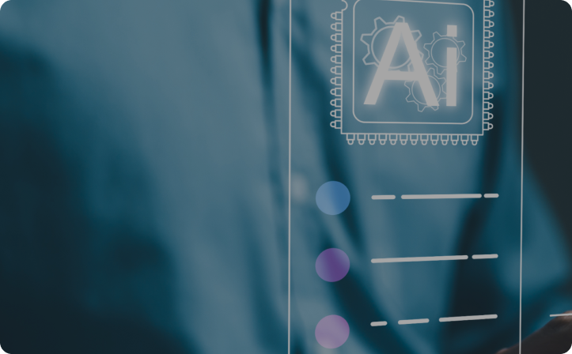

Service
고객의 데이터 가치향상을 통해 비즈니스를 고도화하도록하는 서비스를 제공합니다.
01
통계관리 서비스
다양한 통계데이터를 DB화하고 시스템 구축을 통해 서비스를 하는 종합적인
통계 괸리 서비스를 제공합니다. 통계데이터를 효율적으로 관리할 수 있는
솔루션을 보유하고 있으며 이 솔루션을 통해 통계를 다양하게 활용하도록 통계
관리 서비스를 제공합니다.
통계 괸리 서비스를 제공합니다. 통계데이터를 효율적으로 관리할 수 있는
솔루션을 보유하고 있으며 이 솔루션을 통해 통계를 다양하게 활용하도록 통계
관리 서비스를 제공합니다.

02
Data 분석 컨설팅
고객이 보유하고 있는 대용량의 Data를 활용할 수 있도록 분석 및 관리 프로세스를
컨설팅하고 데이터베이스구축을 수행합니다. Data전문가들은 다양하고 오랜 경험을
보유하고 있으며 이를 기반으로 Data를 활용한 최적의 서비스를 할 수 있도록 컨설팅
서비스를 제공합니다.
컨설팅하고 데이터베이스구축을 수행합니다. Data전문가들은 다양하고 오랜 경험을
보유하고 있으며 이를 기반으로 Data를 활용한 최적의 서비스를 할 수 있도록 컨설팅
서비스를 제공합니다.
03
IT Service
시스템 개발 통합, 운영업무를 수행합니다. 고객의 요구사항을 반영하여 고객
서비스 우선의 시스템을 구축하여 제공합니다. STCreative의 전문가들이 보유한
전문기술과 솔루션을 융합하여 고객이 필요로 하는 시스템을 구축하고, 시스템을
안정적으로 운영할 수 있도록 서비스를 제공합니다.
서비스 우선의 시스템을 구축하여 제공합니다. STCreative의 전문가들이 보유한
전문기술과 솔루션을 융합하여 고객이 필요로 하는 시스템을 구축하고, 시스템을
안정적으로 운영할 수 있도록 서비스를 제공합니다.
04
Data Open
데이터 품질 관리를 통해 데이터 품질을 높여서 데이터를 제공하는 데이터개방
서비스를 수행합니다. 개방데이터를 발굴하여 개방하는 모든 프로세스를 컨설팅하고,
오픈API등의 다양한 개방기능을 보유한 시스템을 구축하도록 서비스를 제공합니다.
서비스를 수행합니다. 개방데이터를 발굴하여 개방하는 모든 프로세스를 컨설팅하고,
오픈API등의 다양한 개방기능을 보유한 시스템을 구축하도록 서비스를 제공합니다.